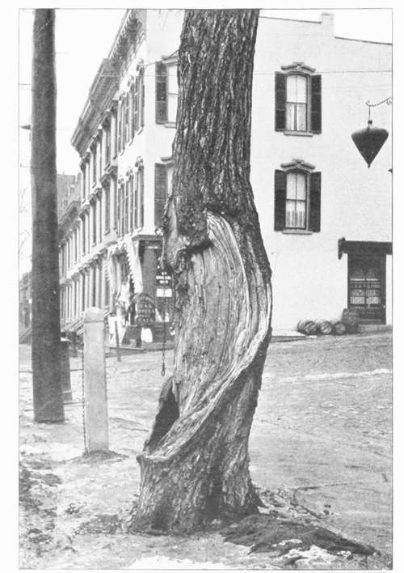
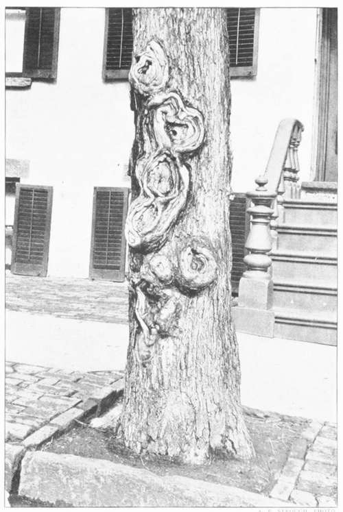

Municipal Control
Description
This section is from the book "Tree Planting Streets And Highways", by William F. Fox. Also available from Amazon: Tree planting on streets and highways.
Municipal Control
In towns where there are no well-organized tree-planting or village improvement societies the planting of street trees and their subsequent care should devolve on the city or village government, preferably, if in a city, on the park commissioners, as the officials in that department would be better qualified for the work, farther removed from political influences, and would be more apt to have the long tenure of office necessary to the proper management of the work, The planting and care of street trees belongs to the city government .is much as street paving. Under the stimulus of local improvement societies individuals often do some planting; but when they sell their property or move away the trees are apt to be neglected. Moreover, it is difficult without municipal control to secure the concerted action necessary for planting a street its entire length with uniform and properly selected species.
Then, again, under the management of a special city department, properly supplied with funds, the spraying of trees and suppression of insect pests can be successfully accomplished; but it is doubtful if our trees can be preserved from this evil through the partial ami disconnected efforts of individuals. As in Washington and Paris, every city should establish nurseries, supported by municipal appropriations, in which the various species best adapted to street planting can be propagated and grown with special reference to such use.
In some of our cities- New York and Brooklyn for instance- valuable and effective work has been accomplished by tree-planting societies; and their intelligent efforts should receive, in some form or another, substantial recognition from the city government. While there may be legal objections to conferring municipal powers on individuals or associations, liberal appropriations might, with good precedent, be made for the benefit of a tree-planting society to enable it to carry on its work. Actuated by disinterested enthusiasm, and provided with funds for the employment of competent men, the society would do as good and intelligent work as any park commission, and, under certain circumstances, secure better results.
* Insects Injurious to Shade Trees. F. P. Felt, D. Sc., Suite Entomologist. Fourth Annual Report, Forest, Fish ami Game Commission, Albany. 1898. Also, Insects Injurious to Kim Trees, by same author. Fifth Annual Report of Commission, 1899. See. also, Prof. A. S. 1'aikanl, Fifth Report of the U. S. Entomological Commission, pp. 31-47- Washington. 1890.
People who question the advisability of planting shade trees in cities rehearse the old story about the injurious effects of smoke, dust, and pavements, and then point to some sickly, deformed specimens in proof of their argument. Hut these unfortunate trees are the result of poor selection, bad planting, and neglect; and the blame should not be laid elsewhere. Asphalt pavement, though impervious to rain, will not prevent trees from obtaining moisture. ( )n the other hand, it prevents evaporation ; the earth beneath it is always damp, for there is still a supply of water from adjoining areas and small underground courses. For years the street trees of Washington and Paris have grown and flourished on the asphalt pavement of those cities.
It must be conceded, however, that asphalt or other impervious pavements lessen greatly the supply of moisture and prevent a sufficient aeration of the roots. To obviate this unfavorable condition as far as possible the flagging on the sidewalks should be cut out around the tree leaving a circular space as large as the situation will permit to facilitate artificial watering, to enable more of the rainfall to reach the roots, and to allow a frequent loosening of the earth at the surface. On narrow sidewalks this opening in the flagging should be in the form of an oblong rectangle in which the longest sides are parallel with the curbstone, as a larger space can thus be obtained without encroaching on the pathway. A still better plan would be to lay the flagging to the tree line only, leaving a strip of ground next the curbing, covered with gravel. The intervals between the trees are not used by people walking along the street. A slight slope in the surrounding flagstones not enough to interfere with walking will increase the area of drainage and amount of moisture received, and a portion of the water that falls on the house roofs can also be conducted in proper quantity from the eaves-troughs and leaders to the roots by conduits laid beneath the flagstones. Where there is an asphalt pavement, openings protected by iron gratings should be left in the gutter opposite each tree, through which water will find its way at every shower, or when the gutters are flushed from a hydrant.
Another unfavorable condition caused by a tight pavement is the prevention of a proper aeration of the roots. 1 his can be remedied to some small extent by the openings left in the flagging .it the base of the trunk. Hut this affords only a partial remedy at the best, and so we cannot expect that a city tree on a closely paved street and sidewalk will develop the same thrifty growth and appearance as if it stood on a village street where the ground around it was exposed to air and sunlight.
Tree Used As A Hitching Post, Albany, N. Y.
An Unprotected Tree.
People who believe in the efficacy of fertilizers in promoting tree growth are apt to consider the planting of paved streets a doubtful undertaking because there is no opportunity to enrich or cultivate the ground. But such discouragement does not seem to be based on sufficient reasons. Fertilizing material is beneficial to surface crops, but it can exert but little influence on roots that penetrate deeply in the earth, and which must draw their sustenance from the lower strata found there, good or bad as the case may be.
In many city streets the ground presents unnatural and unfavorable conditions. The surface has been cut down extensively by grading or blasting, which leaves exposed only the sterile earth of the lower strata; or a depression has been filled, in which case the planting must be done on "made ground" composed of ashes, street litter, old tinware, and all the other kinds .if rubbish which are dumped in such places by the street cleaning bureau. Such conditions, however, should not be considered as a deterrent m planting; but the)' demand a more thoughtful study "1 the situation, with some additional effort in providing larger holes and an ample supply of fertile soil.
While smoke and dust undoubtedly are injurious to some species, leakage from gas mains has caused by far the greatest destruction ol trees in city and village streets. No matter how hardy the species, how well it is planted, or how carefully it is fostered, if the ground becomes saturated with illuminating gas the tree is doomed. It may be assumed that a gas company will, in its own interest, endeavor to prevent any leakage in its mains. Hut the work of finding and stopping a small leak may cost more than the loss of the gas; and it is the small leak, when near a tree, that does the mischief.
A frequent source of injury is the unnecessary mutilation of the larger roots by laborers employed in digging the ditches for gas or water mains. In most cases this can be avoided by the exercise of some care and a slight expenditure of time, which should be insisted upon by the city authorities.
Let every citizen who finds enjoyment in well-shaded streets make an effort to procure the passage of a city ordinance placing the entire control of the trees of his town in the hands of a tree-planting society, or the park department, or some special commission, and use his influence, also, to see that ample funds are annually appropriated by the municipal or village government to carry on the work.
Continue to: